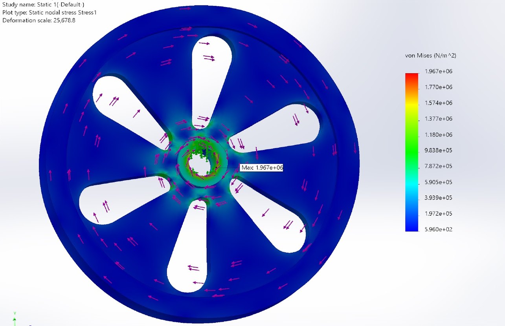
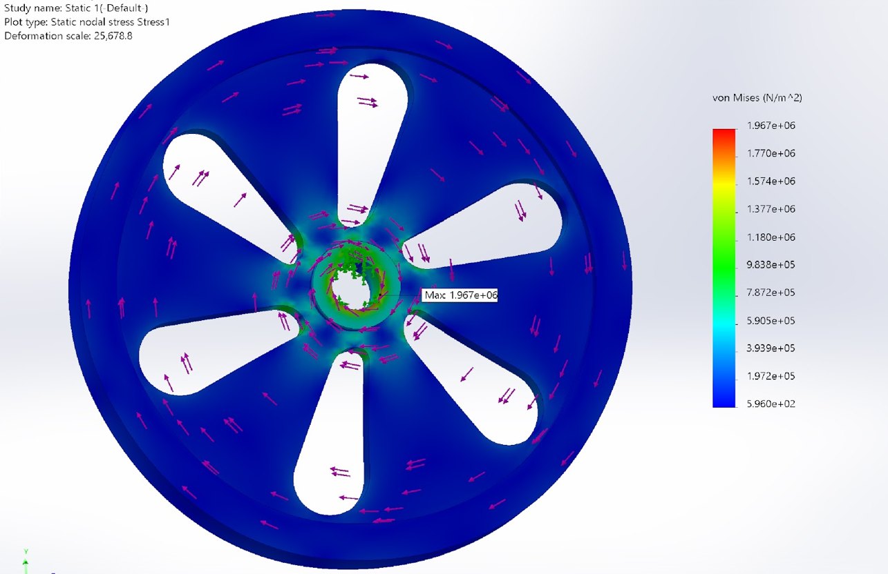

About the Project
In our project for the second year, we created a carriage system to assist communities in Nepal's remote areas, offering a safer way to cross fast-flowing streams. I proposed an enclosed carriage that could carry eight passengers and 20 kg of goods, replacing the accident-prone rope and pulley system.
This carriage was designed with a battery-powered mechanism and an electric motor for reliable movement along the rope line. My contribution included developing the CAD design and performing the necessary calculations for the system, ensuring its efficiency and safety for everyday use.
Skill Acquired:
Innovative Design, Engineering Calculations, Electric Motor Mechanism Understanding, Practical Problem-Solving
 

Copyright © Muhammad.